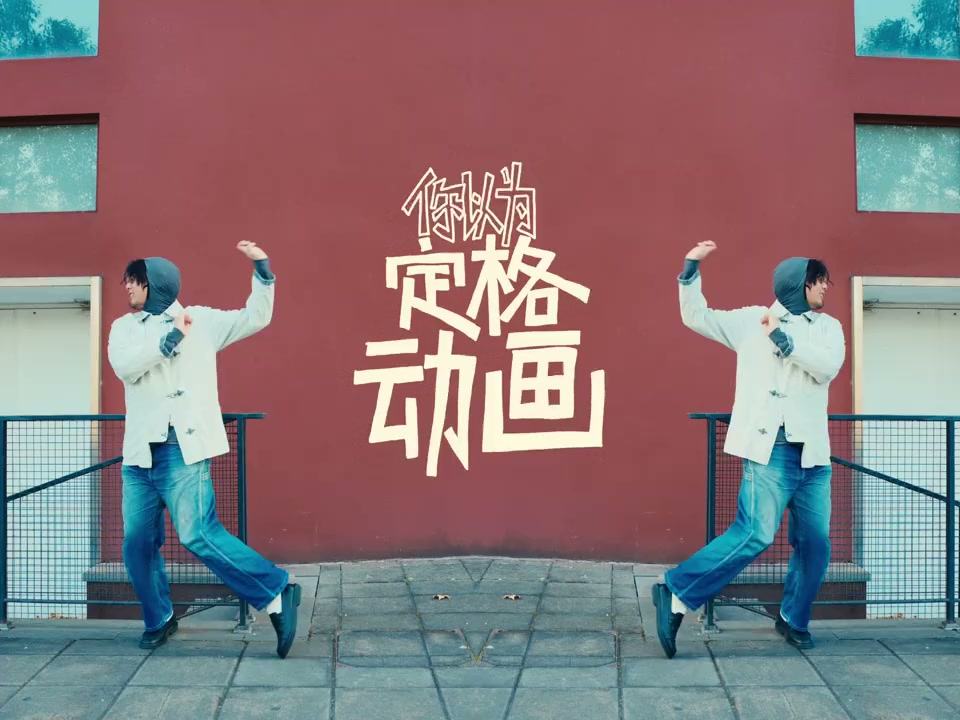
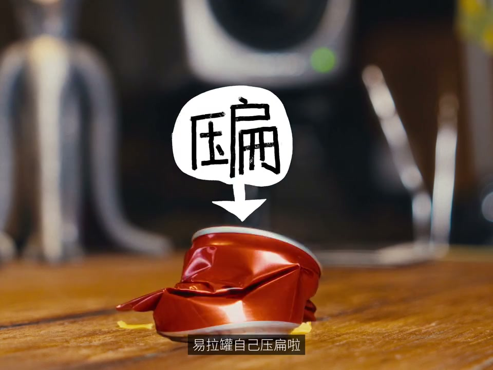
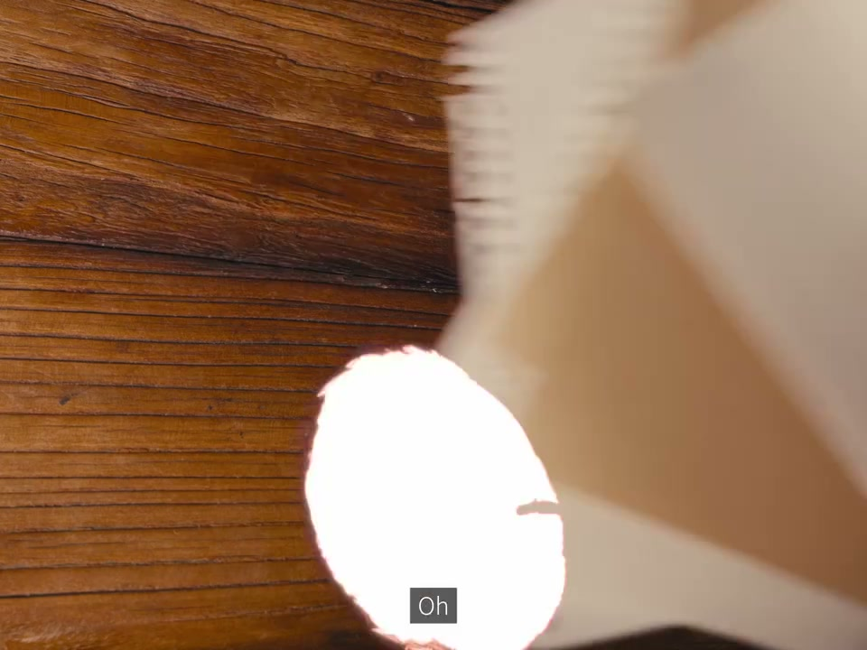
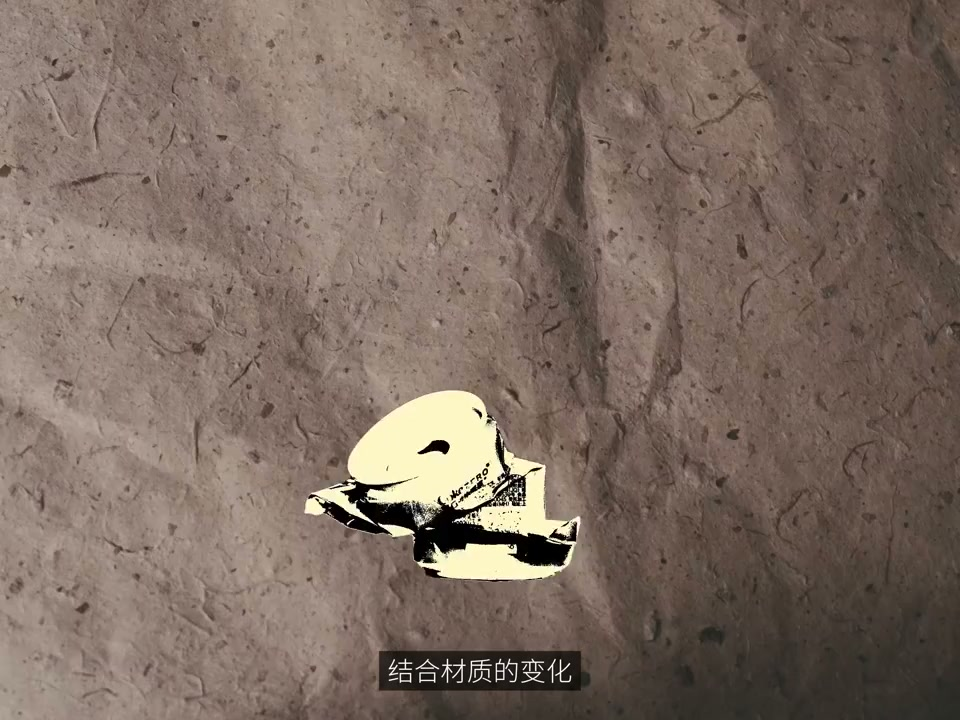
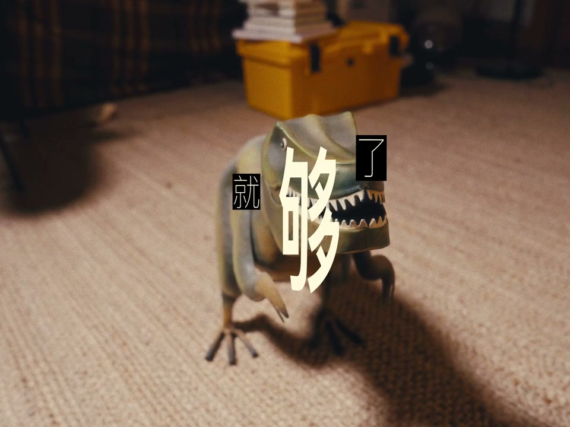
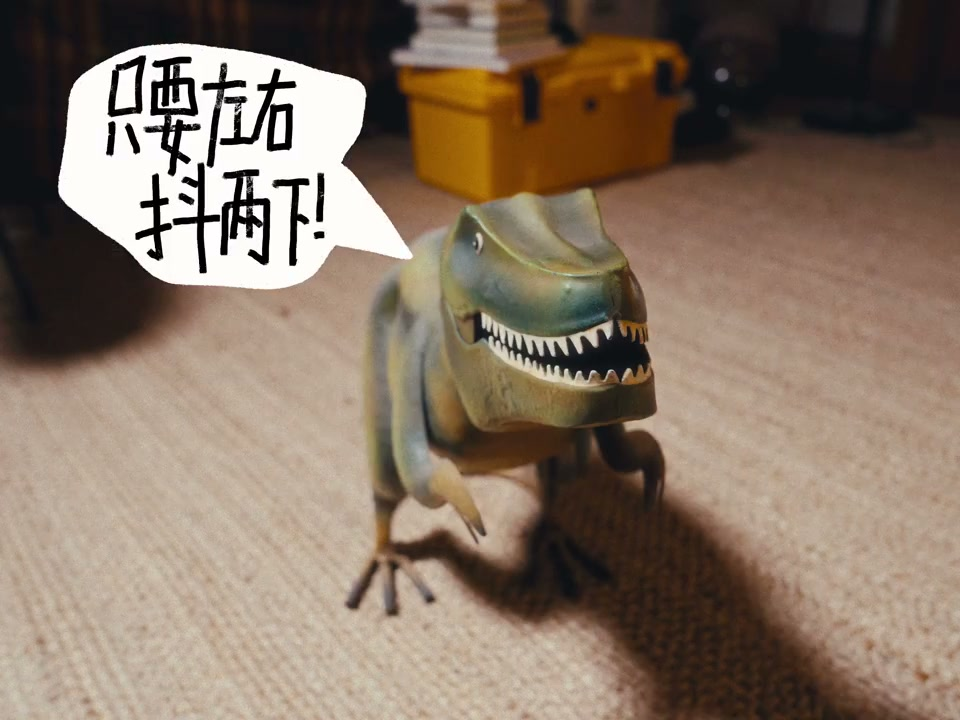

内容要点
[00:00] 你以为订的动画很复杂
[00:02] 其实简单到爆炸
[00:04] 只要派五张就够啦
[00:06] 一 二 三 四 五
[00:08] 然后怎么样
[00:09] 以乐观自己压扁啦
[00:11] 胎的越多越丝滑
[00:13] 杜财重复利用太香
[00:17] 让为了这样的方法
[00:19] 任何东西都能
[00:23] 用法真的尽量万化
[00:25] 记得做标记在底下面的位置亂动啦
[00:31] 诶 你发现了
[00:33] 蚊子的出现也可以这样的
[00:38] 一 二 三 四 五
[00:40] Vlog标题出现啦
[00:42] 柔直展开也行啦
[00:44] 反正原来你都是一样的
[00:46] 哦 我实在是太喜欢吃了
[00:48] 让我们再抓紧上来惹我一惹
[00:51] 一 二 三 四 五
[00:54] 动它的背景做好啦
[00:56] 上面放置是非常合适的
[00:58] 结合材质的变化
[00:59] Vlog标题用完了
[01:07] 如果前面还是太复杂
[01:09] 下面是更简单的方法
[01:11] 一 二
[01:13] 就够啦
[01:14] 那么应该怎么用呢
[01:17] One Two
[01:18] One Two
[01:19] One Two
[01:20] One Two
[01:21] Wake Up
[01:22] 只要左右抖两下
[01:23] 看起来就像在说话
[01:25] 只要左右抖两下
[01:27] 看起来就像
[01:29] 如果你觉得有点傻
[01:34] 换几个表情吧
[01:59] Wake Up
[02:00] Body to the beat
[02:03] Body to set you free
[02:07] Vlog





